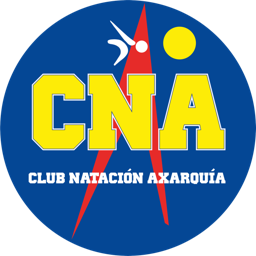

Manual de posiciones de cámara · Entreno en seco CNA (prototipo)

Primero: ponla en tu móvil como si fuera una app (recomendado)
Se ve a pantalla completa, sin las barras del navegador, y queda un icono con el logo del club en tu pantalla de inicio. Dirección: https://andresvazquez11.github.io/Club-Natacion-Axarquia/entreno-seco/
Ábrela en Safari (iPhone) o Chrome (Android).
iPhone: toca Compartir (el cuadrado con la flecha) → Añadir a pantalla de inicio → Añadir. Android: menú ⋮ → Instalar aplicación.
Abre siempre la app desde el icono Seco CNA y acepta el permiso de cámara.
Antes de empezar (vale para todos)
Móvil fijo: trípode, caja o libros. Nunca en la mano.
Sin inclinar: la lente mira recta, a la altura que indica cada ejercicio.
Cuerpo entero a la vista, con margen alrededor (unos 10 % libre).
Luz de frente o lateral; evita ventanas muy fuertes detrás.
Ropa ajustada y de un color distinto al fondo. Fondo liso, un solo nadador y sin gente moviéndose.
Pon tu estatura en la app: se usa para calcular los centímetros.
Los pasos en la app
Abre la dirección de la app en el móvil y pulsa Activar cámara (acepta el permiso).
Elige el nadador arriba a la izquierda (o ＋ Nuevo nadador: nombre y estatura). Quedan guardados.
Elige el ejercicio y, si hace falta, la lente (0,5× / 1×).
Si pide horizontal, gira el móvil (si no gira, activa la rotación automática).
Coloca el móvil como indica este manual.
● Grabar (cuenta desde ahí), haz el ejercicio y ■ Parar. El esqueleto cambia de color: verde bien, ámbar mejorable, rojo a corregir.
Al parar, el vídeo añade al final los resultados y conclusiones. Pulsa Compartir → WhatsApp (a ti o al grupo): queda copia en el chat. El PDF completo es opcional (en Android, botón ② aparte). Si no, se pierde.
Lente: 0,5× o 1×
La lente 0,5× (ultra gran angular) permite estar más cerca: la distancia de cada dibujo se reduce a la mitad aprox. Sirve cuando no hay espacio (plancha, flexiones, salto de longitud, plataforma). Deforma un poco los bordes: mantén al nadador en el centro. Se elige con los botones de arriba: en iPhone salen 0,5× / 1× / Tele; en Android pueden salir como Cám. 1, Cám. 2… (prueba cuál es la gran angular) o como zoom. Si no sale ninguno, usa 1×.
Marcas arrastrables (A, B y agua)
En el salto de longitud y la salida desde la plataforma aparecen líneas que arrastras con el dedo: A (amarilla) = línea de salida o borde de la plataforma, B (verde) = un punto a distancia conocida que escribes en «A–B (m)», y la línea azul = el agua. Con ellas la app sabe cuántos centímetros son los píxeles y la medida es mucho más exacta que usando solo la estatura.
Resumen de posiciones
Ejercicio
Vista
Móvil
Distancia
Altura
Salto vertical
De frente
Vertical
2,5–3 m
≈ 1 m
Sentadilla
De perfil
Vertical
2,5–3 m
≈ 1 m
Plancha
De perfil (paralela)
Horizontal
≈ 2,5 m
≈ 0,5 m
Flexiones
De perfil (paralela)
Horizontal
≈ 2,5 m
≈ 0,5 m
Dominadas
De frente
Vertical
≈ 3 m
≈ 1,3 m
Salto de longitud
De perfil
Horizontal
3,5–4 m
≈ 0,8 m
Salida desde la plataforma
De perfil (paralela)
Horizontal
6–8 m
≈ 1,1 m
Sprint con puertas (arranque desde quieto)
De perfil (paralela)
Horizontal
7–8 m
≈ 0,9 m
Equilibrio a una pierna
De frente
Vertical
2,5–3 m
≈ 1 m
Postura hidrodinámica (streamline)
De perfil
Vertical
≈ 3 m
≈ 1,2 m
Si algo no funciona
«No te veo»: se ve poco el cuerpo, falta luz o estás demasiado lejos; acércate o enciende más luz.
Los números saltan: probablemente el móvil se mueve o está inclinado; fíjalo mejor.
La imagen sale girada: gira el móvil como quieres y recarga la página.
Pocos fps (arriba a la izquierda): en ⚙ Nadadores → Rendimiento prueba «Optimizar ahora»: la app mide las combinaciones y elige la mejor (también lo hace sola la primera vez). Con menos de 30 fps los saltos son menos precisos.
Prototipo CNA · medida orientativa con la cámara del móvilClub Natación Axarquía
Salto vertical
De frenteMóvil vertical2,5–3 mAltura: cadera (1 m)
Cómo colocarlo
Pon el móvil en un trípode o apoyado (nunca en la mano), totalmente vertical y sin inclinar: la lente a la altura de tu cadera.
Colócate de frente a unos 2,5–3 m. Debe verse de los pies a la cabeza con unos 30 cm libres por encima de la cabeza (el salto sube).
Suelo plano y liso, con un punto o cinta marcada donde apoyas los pies.
Ropa ajustada (bañador, mallas o camiseta pegada) y fondo lo más liso posible.
Cómo hacerlo
Elige «Salto vertical», pon tu estatura y pulsa ● Grabar.
Ponte de pie y quieta 1 segundo, hasta ver «¡Salta!».
Salta lo más alto que puedas sin moverte del sitio y cae en el mismo punto.
Espera a ver el resultado antes de repetir.
Qué mide
Altura del salto por el tiempo en el aire (cm), altura de los pies y de las caderas.
Fallos típicos
Móvil inclinado o en la mano: la altura sale mal.
Pies cortados en la imagen.
Ponerse más cerca o más lejos a mitad de la serie (se recalibra solo si te quedas quieta un segundo).
Sentadilla
De lado (perfil)Móvil vertical2,5–3 mAltura: cadera (1 m)
Cómo colocarlo
Colócate de perfil: el móvil queda a tu lado, a 90° respecto a la dirección en que miras.
Móvil vertical a la altura de la cadera, a 2,5–3 m, sin inclinar.
Cadera, rodilla y tobillo del lado que ve el móvil deben estar libres (no tapados por los brazos ni por ropa suelta).
Pon los brazos al frente para que no tapen la cadera.
Cómo hacerlo
Elige «Sentadilla» y pulsa ● Grabar.
Baja hasta que el muslo quede horizontal (rodilla a 90° o menos) y sube del todo.
Hacer las repeticiones a ritmo constante, sin rebotar.
Qué mide
Repeticiones, profundidad (ángulo mínimo de rodilla) e inclinación del tronco.
Fallos típicos
Ponerse de frente: el ángulo de rodilla no se puede medir bien.
Ropa muy ancha que oculta la rodilla.
Móvil demasiado alto o bajo: deforma los ángulos.
Plancha
De ladoMóvil HORIZONTAL≈ 2,5 mAltura: 0,5 m
Cómo colocarlo
Gira el móvil a horizontal ANTES de pulsar «Activar cámara» (si la imagen sale girada, recarga la página).
Móvil a la altura del cuerpo (≈ 0,5 m): trípode bajo, una silla o una pila de libros.
Colócate de lado, paralela al móvil, a unos 2,5 m, con el cuerpo centrado en la pantalla.
Se debe ver todo: hombro, cadera y tobillo, con margen a los lados. Una esterilla de color distinto al suelo ayuda.
Cómo hacerlo
Elige «Plancha» y pulsa ● Grabar.
Ponte en plancha (antebrazos o manos), cuerpo recto de cabeza a pies.
El contador sube solo mientras el cuerpo está recto; si la cadera cae o sube, avisa.
Al terminar, baja: tras 1,5 s fuera de la posición se guarda el intento.
Qué mide
Segundos con el cuerpo recto (línea hombro-cadera-tobillo ≥ 165°), tiempo total y %.
Fallos típicos
Móvil en vertical: el cuerpo no cabe y se corta.
Cámara por encima del cuerpo, mirando hacia abajo.
Dejar el brazo o la pierna lejanos tapando el cuerpo.
Flexiones
De ladoMóvil HORIZONTAL≈ 2,5 mAltura: 0,5 m
Cómo colocarlo
Igual que la plancha: móvil horizontal, a ≈ 0,5 m de altura, a unos 2,5 m, de perfil.
Que se vean hombro, codo y muñeca del brazo cercano al móvil, además de cadera y tobillo.
Esterilla de color contrastado; no pongas nada delante del brazo.
Cómo hacerlo
Elige «Flexiones» y pulsa ● Grabar.
Ponte en posición de flexión con el cuerpo recto.
Baja hasta que el codo llegue a 90° o menos y sube estirando del todo.
No pares entre repeticiones más de 1 segundo.
Qué mide
Repeticiones, ángulo mínimo del codo y línea del cuerpo (se avisa si el cuerpo se curva).
Fallos típicos
Ponerte de frente: no se ve el ángulo del codo.
Móvil muy alto: los ángulos salen deformados.
Ropa ancha en el brazo.
Dominadas
De frente (o de lado)Móvil vertical≈ 3 mAltura: pecho (1,3 m)
Cómo colocarlo
Móvil vertical en trípode a unos 3 m y a la altura del pecho (≈ 1,3 m), sin inclinar.
En la pantalla deben verse la barra, los dos brazos y la cabeza durante todo el movimiento (los pies pueden quedar cortados).
De frente se ven los dos brazos; de lado, solo cuenta el brazo cercano al móvil.
Fondo liso; nadie caminando detrás.
Cómo hacerlo
Elige «Dominadas» y pulsa ● Grabar.
Cuélgate con los brazos estirados.
Sube hasta pasar la barbilla por encima de las manos y baja estirando del todo.
Cuenta como completa si la nariz supera las manos arriba.
Qué mide
Repeticiones, si cada una es completa (barbilla arriba) y el ángulo del codo.
Fallos típicos
Es el ejercicio menos preciso: necesita buena luz y cuerpo bien visible.
Barra fuera de plano: no se ve cuándo se pasa la barbilla.
Brazos tapados por el cuerpo si te pones de lado y cruzas manos.
Salto de longitud
De ladoMóvil HORIZONTAL3,5–4 m (0,5×: 2 m)Altura: 0,8 mMarcas A–B
Cómo colocarlo
Móvil horizontal antes de activar la cámara, a unos 3,5–4 m (con la lente 0,5×, a unos 2 m) y a ≈ 0,8 m de altura.
Salta en paralelo al móvil (la dirección del salto es perpendicular a la línea que va al móvil).
Pon una cinta o cono en la línea de salida y otro cono a una distancia conocida (p. ej. 2 m) en la misma línea del salto.
En la pantalla arrastra la marca A a la línea de salida y la B al segundo cono, y escribe la distancia A–B. Con marcas la medida es mucho más exacta.
Cómo hacerlo
Elige «Salto de longitud» y pulsa ● Grabar.
Quieta de perfil con los pies detrás de la marca A, quieta 1 s.
Salta hacia delante y quédate quieta al caer ~1 s: ahí se mide.
La distancia es de la marca A al talón más cercano.
Qué mide
Distancia (cm) y porcentaje de la estatura.
Fallos típicos
Cámara en diagonal: la distancia sale falseada.
Moverte al caer (no detecta la caída).
Móvil demasiado cerca: te sales de la imagen.
Salida desde la plataforma
De ladoMóvil HORIZONTAL6–8 m (lente 0,5×)Altura: cadera sobre el poyeteMarcas A, B y agua
Cómo colocarlo
Móvil horizontal en trípode en el borde de la piscina, de lado (perpendicular a la calle), a unos 6–8 m con la lente 0,5× (con 1×, a 10–12 m).
La lente a la altura de la cadera del nadador sobre el poyete (≈ 1–1,2 m sobre la cubierta). Que se vean la plataforma entera y al menos 5 m de agua por delante.
En la pantalla arrastra A al borde de la plataforma, B al cambio de color de la corchera (5 m) y la línea azul a la superficie del agua.
Un solo nadador, en la calle más cercana a la cámara; sin gente delante del móvil.
Cómo hacerlo
Elige el nadador y «Salida desde la plataforma» y pulsa ● Grabar.
El nadador se coloca quieto en el poyete 1 s: la app muestra «Listo» con rodilla, tronco y pies respecto al borde.
Se da la salida: la app detecta cuándo los pies dejan la plataforma y cuándo las manos tocan el agua.
Al terminar muestra distancia, ángulo de entrada, tiempo de vuelo y separación manos-pies.
Qué mide
Posición en la plataforma (rodilla, tronco, pies al borde), distancia hasta la entrada de las manos, vuelo, ángulo de entrada, separación manos-pies y si el cuerpo entra recto.
Fallos típicos
Marcas mal puestas (A, B o agua): todas las distancias salen desplazadas.
Reflejos y salpicaduras: tras entrar los pies pueden no verse (aparece «-» en manos-pies).
Cámara en diagonal o plataforma cortada.
Es lo más difícil de medir: pruébalo primero con salidas lentas y pide permiso a la piscina.
Sprint con puertas (arranque desde quieto)
De ladoMóvil HORIZONTAL7–8 m (0,5×: 4 m)Altura: cadera (0,9 m)Puertas 2–4
Cómo colocarlo
Móvil horizontal en trípode, de lado (perpendicular a la carrera), a unos 7–8 m (con lente 0,5×, a unos 4 m) y a la altura de la cadera (≈ 0,9 m), sin inclinar.
Pon conos cada 5 m (o la distancia que elijas) en la línea de carrera. Todo el recorrido debe caber en la pantalla de lado a lado.
Arrastra las puertas (la amarilla es la salida, las verdes los conos). Elige cuántas (2–4) y la distancia entre ellas.
Suelo plano y un solo nadador corriendo en la imagen.
Cómo hacerlo
Elige el nadador y «Sprint con puertas» y pulsa ● Grabar.
El nadador se coloca quieto antes de la primera puerta, de lado. Sale «Listo».
Arranca cuando quiera: el tiempo empieza con el primer movimiento (arranque desde quieto) y se para al cruzar la última puerta.
Se muestra el tiempo total, el de cada tramo y la velocidad por tramo.
Qué mide
Tiempo total desde el primer movimiento, tiempo y velocidad de cada tramo entre puertas y tiempo hasta la puerta de salida. Cuenta cuando el torso (hombros y caderas) cruza cada línea.
Fallos típicos
Puertas que no coinciden con los conos: los tramos salen mal.
Móvil en diagonal o inclinado: cambia la escala.
A 30 fps el error es de ±33 ms por cruce: mejor 60 fps y recorridos de 5 m o más.
Dos personas cruzando la imagen: se confunde.
Equilibrio a una pierna
De frente (o de lado)Móvil vertical2,5–3 mAltura: cadera (1 m)
Cómo colocarlo
Móvil vertical a la altura de la cadera, a 2,5–3 m, sin inclinar.
Colócate de frente, de pies a cabeza, con los dos pies visibles y espacio a los lados.
Brazos en la cintura (no delante de la cadera), para que no tapen.
Suelo firme; si usas colchoneta, que no sea blanda.
Cómo hacerlo
Elige «Equilibrio a una pierna» y pulsa ● Grabar.
Levanta un pie del suelo (rodilla doblada) y mantén la posición.
Termina el intento cuando apoyes el pie: se guarda si duraste más de 2 s.
Repite con la otra pierna: el informe compara izquierda y derecha.
Qué mide
Segundos en equilibrio, balanceo lateral de la cadera (cm) y pierna de apoyo.
Fallos típicos
Saltar o dar pasos: se corta el intento.
Pies fuera de la imagen.
Brazos tapando las caderas.
Postura hidrodinámica (streamline)
De lado (perfil)Móvil vertical≈ 3 mAltura: 1,2 m
Cómo colocarlo
Móvil vertical en trípode, a ≈ 3 m y a la altura del pecho (≈ 1,2 m).
Colócate de perfil; deja al menos 30 cm libres por encima de las manos con los brazos arriba.
Que se vean hombro, codo, muñeca y cadera del lado del móvil.
Ropa ajustada en los brazos.
Cómo hacerlo
Elige «Postura hidrodinámica» y pulsa ● Grabar.
Sube los brazos juntos, estirados y pegados a las orejas, como en la salida.
Aguanta lo máximo que puedas con los codos rectos.
Baja los brazos para terminar: el tiempo «en postura correcta» se guarda.
Qué mide
Segundos con hombro y codos a 165° o más (180° = recto) y su ángulo medio.
Fallos típicos
Poner el móvil muy cerca: las manos se salen por arriba.